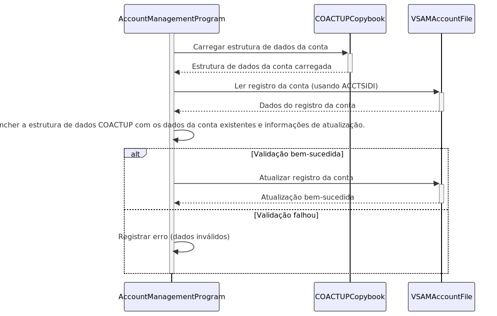

Gerado em: 1º de outubro de 2024
Título do Documento: Especificação da Estrutura de Dados para Atualização de Conta
Descrição Resumida:
Este documento descreve a estrutura de dados e as regras de negócio associadas à atualização de informações de contas de cartão de crédito em um sistema baseado em COBOL. Ele serve como um guia técnico para desenvolvedores e uma ferramenta de comunicação para gerentes e proprietários de produtos.
Histórias de Usuário:
Como administrador do sistema, preciso de uma maneira padronizada de atualizar as informações da conta do cliente para que a integridade dos dados seja mantida em todo o sistema.
Épico Relacionado: 2 - Gerenciamento de Conta
Requisitos Técnicos:
- Definição da Estrutura de Dados:
- O copybook
COACTUP.CPY define a estrutura para armazenar informações da conta durante as atualizações.
- Cada campo representa um atributo específico da conta de um cliente (por exemplo,
ACCTSIDI para ID da conta, ACSTTUSI para status da conta, ACRDLIMI para limite de crédito).
- Os tipos de dados e comprimentos são rigorosamente aplicados (por exemplo,
ACCTSIDI é alfanumérico com um comprimento de 11, ACRDLIMI é numérico com um comprimento assumido com base no contexto de uso).
- Validação de Dados:
- Os programas que usam este copybook são responsáveis por validar os dados antes de atualizar a conta.
- A validação deve incluir:
- Verificações de Tipo de Dados: Garanta que os dados estejam em conformidade com o tipo definido para cada campo.
- Verificações de Comprimento de Campo: Verifique se os dados se encaixam no comprimento especificado para cada campo.
- Aplicação de Regras de Negócio: Implemente regras de negócio específicas, como:
- Atualizações de Limite de Crédito: Garanta que os novos limites estejam de acordo com as faixas predefinidas ou processos de aprovação.
- Transições de Status da Conta: Valide as alterações de status permitidas (por exemplo, uma conta não pode ser fechada se houver um saldo pendente).
- Integridade e Consistência de Dados:
- Usar um copybook padronizado garante uma estrutura de dados consistente em todos os programas que interagem com as informações da conta.
- Isso reduz erros decorrentes de discrepâncias no formato dos dados e simplifica o mapeamento de dados.
- Segurança de Dados:
- O acesso a
COACTUP.CPY e aos dados que ele estrutura deve ser restrito a pessoal e programas autorizados.
- Dados confidenciais dentro da estrutura (por exemplo, números de conta, números de segurança social) devem ser criptografados em trânsito e em repouso.
- Integração com Outros Sistemas:
- Este copybook impacta qualquer componente do sistema que interage com dados de conta de cartão de crédito, incluindo:
- Programas de Gerenciamento de Conta: Usam o copybook diretamente para atualizar as informações da conta.
- Sistemas de Relatórios: Dependem da estrutura de dados definida no copybook para relatórios precisos.
- Processamento em Lote: Programas em lote que atualizam as informações da conta usariam essa estrutura.
Modelos Relacionados:
- Conta:
ACCTSIDI String: Identificador exclusivo da conta.ACSTTUSI String: Status da conta (por exemplo, ‘A’ para Ativo, ‘C’ para Fechado).ACRDLIMI Decimal: Limite de crédito permitido para a conta.ACURBALI Decimal: Saldo pendente atual na conta.ACSFNAMI String: Primeiro nome do titular da conta.ACSMNAMI String: Nome do meio do titular da conta.ACSLNAMI String: Sobrenome do titular da conta.ACSADL1I String: Linha de endereço 1 do titular da conta.ACSSTTEI String: Código do estado do titular da conta.ACSADL2I String: Linha de endereço 2 do titular da conta.ACSZIPCI String: CEP do titular da conta.ACSCITYI String: Cidade do titular da conta.ACSCTRYI String: Código do país do titular da conta.ACSPH1AI String: Código de área do telefone do titular da conta.ACSPH1BI String: Prefixo do telefone do titular da conta.ACSPH1CI String: Número da linha telefônica do titular da conta.OPNYEARI Integer: Ano em que a conta foi aberta.OPNMONI Integer: Mês em que a conta foi aberta.OPNDAYI Integer: Dia em que a conta foi aberta.EXPYEARI Integer: Ano de vencimento do cartão associado à conta.EXPMONI Integer: Mês de vencimento do cartão associado à conta.EXPDAYI Integer: Dia de vencimento do cartão associado à conta.
Configurações:
- Nenhuma específica para este arquivo. Configurações como caminhos de arquivo para acesso a dados, formatos de mensagem de erro e mecanismos de registro seriam definidos em nível de programa ou sistema.
Melhorias de Código:
- Tratamento de Erros Centralizado: Implemente uma rotina comum de tratamento de erros para gerenciar falhas de validação e problemas de acesso a dados de forma consistente.
- Registro Aprimorado: Inclua informações detalhadas nos logs para cada tentativa de atualização, como carimbos de data/hora, IDs de usuário, alterações específicas feitas e status de sucesso/falha. Isso auxilia na depuração e auditoria.
- Otimização de Desempenho: Ao lidar com atualizações de alto volume, considere otimizar os padrões de acesso a dados e minimizar as operações de E/S para obter melhor desempenho.
Melhorias de Segurança:
- Listas de Controle de Acesso (ACLs): Implemente ACLs rígidas no arquivo copybook e nos arquivos de dados associados para restringir o acesso apenas ao pessoal autorizado.
- Criptografia de Dados: Criptografe campos de dados confidenciais dentro da estrutura do copybook, tanto quando armazenados em arquivos VSAM quanto durante a transmissão entre sistemas.
- Auditorias de Segurança Regulares: Realize auditorias de segurança periódicas e avaliações de vulnerabilidade para identificar e solucionar riscos potenciais.
Diagrama Conceitual:

–Made by “Smart Engineering” (by Compass.UOL)–